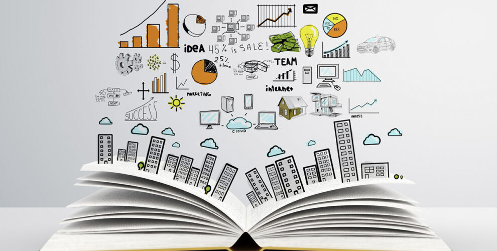

En este proyecto haremos nuestras proyecciones a futuro que tenemos a largo y corto plazo Como personas independientes y estudiantes, se trata de como quiero cumplir mis logros, mis objetivos y tener buena estructura sobre lo que quiero hacer, lo que quiero que sea lo mejor para mí y lo que quiero lograr. Utilizando diferentes técnicas y estrategias que nos pueden ayudar a cumplir nuestro objetivo y planear nuestras metas y tener en mente el esfuerzo para lograrlo. Es importante tener una planificación de nuestras vidas ya que se nos haría más fácil tener en cuenta lo que queremos hacer para mejorar nuestras vidas y tener el objetivo y al momento que tengamos uno de los obstáculos superarlos sin ningún problema ya que estaremos motivados y tendremos esa mentalidad de cumplir nuestro objetivo sin importar los obstáculos que tengamos durante el proceso de “MI PROYECTO DE VIDA".
Para este proyecto podemos utilizar diversos tipos de herramientas de técnicas y estrategias de estudio que ya vimos en un proyecto anterior ya que nos ayuda a comprender más el tema y que al momento de hacer un trabajo o proyecto ya que estas herramientas nos pueden ayudar a que sea más fácil y hasta poder tener una calificación agradable con la cual te sientas bien de ti mismo , nos ayuda a cumplir poco a poco nuestros objetivos que tenemos ya sea a largo , mediano o corto plazo , por el momento el proyecto seria ir poco a poco mejorando nuestras calificaciones en cada parcial para que así tengamos más motivación y darnos a entender que si tenemos capacidades y conocimientos para salir adelante con nuestros objetivos y que no importa si alguna cosa se nos dificulta en el proceso de cumplir el objetivo, solo son retos que tenemos que superar para seguir adelante y no darnos por vencidos solo son pruebas para que entiendas que no todo es fácil también se tiene que luchar para conseguir lo que quieres , en lo personal cada obstáculo que se interpone en el proceso de que yo esté haciendo algún trabajo o proyecto en el momento me estreso mucho y la paciencia se me agota y pienso en dejar de hacer dicho trabajo pero luego descanso un poco empiezo de nuevo pero ahora analizo mis errores y los corrijo para que no me pase de nuevo el mismo error y que todo salga bien ya después de concluir el proyecto analizo todo y entiendo que solo fue una pequeña reflexión para entender que no tengo porque darme por vencida ya que cada esfuerzo que haga en cada uno de los próximos proyectos tendré una recompensa como el tener una buena calificación y que todo el proyecto esté bien hecho a pesar de las dificultades que tuve al momento de hacerlo .para lograr mis metas y objetivos es.

Y en lo personal quiero cumplir cada uno de mis objetivos que tengo a largo, corto y mediano plazo sin importar las dificultades que tenga en el proceso de estar cumpliendo eso, para concluir mi preparatoria y sentirme orgullosa de mi tengo que esforzarme y valorar cada una de mis clases para el aprendizaje y comprender cada una de ellas y que en un futuro me sirvas para concluir mi preparatoria , ya en un futuro que tenga mi título entenderé que todo el esfuerzo que tuve que hacer en cada uno de los procesos para llegar a mi meta tendrá una buena recompensa y tendré lo que algún día soñé en tener por mi propia cuenta y tendré ese título en mis manos.
Teoria de color
ColorEstrategias y tecnicas de estudio
Tecnicas y estrategias